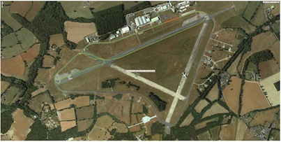

The Stig
49.33
1st
Barack Obama
50.21
2nd
Jeremy Clarkson
53.22
3rd
James May
53.22
4th

0 1 2 3 4 5 6 7 8 9
0 1 2 3 4 5 6 7 8 9
:
0 1 2 3 4 5 6
0 1 2 3 4 5 6 7 8 9
:
0 1 2 3 4 5 6
0 1 2 3 4 5 6 7 8 9
:
0 1 2 3 4 5 6 7 8 9
0 1 2 3 4 5 6 7 8 9
0 1 2 3 4 5 6 7 8 9